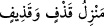
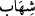

cinler yeryüzünde iskan ettikleri için “__WORD__ yani aşağı topluluklar olarak tavsif
edilmiştir. Bu söz, göğün şeytanlardan nasıl korunduğuna ve bu esnada şeytanlara
uygulanan azaba tenbihle beraber, göğün şeytanlardan korunmasından sonra şeytanların
hallerini beyan için getirilmiştir. Mânâ şöyledir: Şeytanlar artık göğe ve melekût
âleminde mele-i âlâ’nın sâkinleri olan melekleri dinlemeyi isteyemezler. Yani Levh-i
mahfuzun bir kısım sırlarına muttali olan melekler birbirlerine o sırları söylerler.
Şeytanlar bu sırları bizzat işitmezler, hatta işitmeye ve kulak vermeye güçleri yetmez.
Göğe yükselmek istedikleri zaman “Her taraftan” yani göğün her tarafından
“taşlanırlar.” “__WORD__, uzak atış demektir. Bu atışta uzaklık itibar edildiği için uzaktan
atış mevzi mânâsına “__WORD__ denilir. Yine “__WORD__
” yani “ona taş attım”
demektir. Kişiye zina ve günah iftirasında bulunmak da yine bu cümledendir.
9. Kovulup atılırlar. Ve onlar için sürekli bir azap vardır.
“Kovulup atılırlar. Ve onlar için” dünyadaki kıvılcımlarla kovulma azabından başka
“sürekli” ve daimi “bir azap vardır.” Bir iş devamlı olursa “__WORD__ denilir.
el-Müfredât’ta “__WORD__ kelimesi için sürekli ve daimi bir hastalıktır, denilmiştir.
10. Ancak (meleklerin konuşmalarından) bir söz kapan olursa, onu da delip
geçen bir parlak ışık takip eder.
“Ancak (meleklerin konuşmalarından) bir söz kapan olursa”
“__WORD__, süratle kapıp kaçmaktır. Burada murad edilen sözü kapmaktır. Yani
meleklerin konuşmalarına hırsızlama kulak kabartmaktır. “__WORD__ kelimesinin tarifinden
anlaşılan da budur. Yani şeytanlar topluluğu meleklerin konuşmalarından tek bir sözü
çalıp kaçan şeytana kulak verirler.
“Onu da delip geçen bir parlak ışık takip eder.”
Burada “__WORD__ kelimesi, “__WORD__” ve “__WORD__ yani tabi oldu, katıldı, kavuştu anlamlarına gelir.
İbn Kemâl der ki: “__WORD__ kelimesi ile “__WORD__” kelimesi arasındaki fark şudur: İkinci şahıs
birinciye kavuşmayı istediğinde “__WORD__ denilir. Ancak ikinci şahıs birinciye uğrayıp
onunla beraber yürür giderse “__WORD__ denilir. Kâmûs’ta der ki: “__WORD__ kelimesi “__WORD__
vezninde olup yükselen ateşten çıkan şûle ve kıvılcım demektir. Burada kastedilen ise
gökten kırılıp parçalanmış görünen ışık, alev ve parıltılardır. el-Müfredât’ta der ki: “